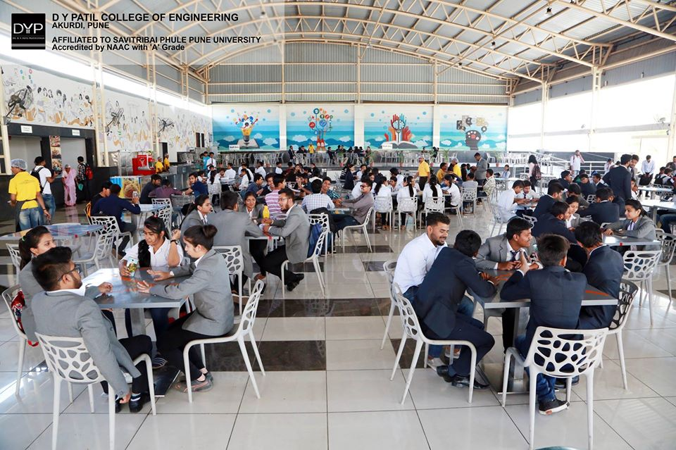

Welcome to Hostel Hacks: Your Guide to Surviving (and Thriving) on Questionable Mess Food
Ever stared at your hostel "meal" and wondered if chewing cardboard would be more flavorful?
Yeah, we've all been there. Hostel food: the culinary equivalent of a soggy napkin. But fear not, fellow student warriors! This is where Hostel Hacks comes in, your one-stop shop for transforming hostel life from a bland, beige nightmare to a flavor fiesta – even if your kitchen is the size of a shoebox.
Here's the harsh truth:
- Hostel food is made in vats the size of bathtubs. Enough said.
- Creativity and spices are like endangered species in most mess kitchens.
- "Fresh vegetables" usually means they haven't sprouted mold yet.

The only place where you can find more stains on the floor than on the plates
But hey, we're not here to dwell on the culinary apocalypse. We're here to fight back!
Hostel Hacks is your secret weapon against the tyranny of tasteless food. We'll show you how to whip up delicious, budget-friendly meals in your tiny room with just a microwave, a hotplate, and a healthy dose of ingenuity (and maybe a little bit of instant coffee for fuel).
Think! , the classics
- Maggi MasalaThe midnight savior, the exam-cramming fuel, the king of all hostel comfort foods. We salute you, Maggi.
maggi
- Cheese Grilled SandwichThe ultimate "I need a hug in bread form" meal. Melty cheese, toasted goodness, pure happiness.
Grilled cheese sandwich
- CoffeeThe liquid motivation, the all-nighter companion, the only reason some of us are still standing. We got you, coffee.
coffee